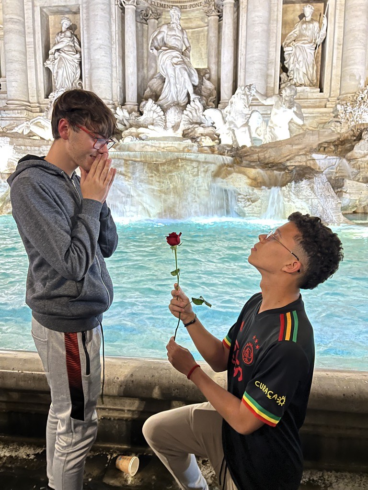
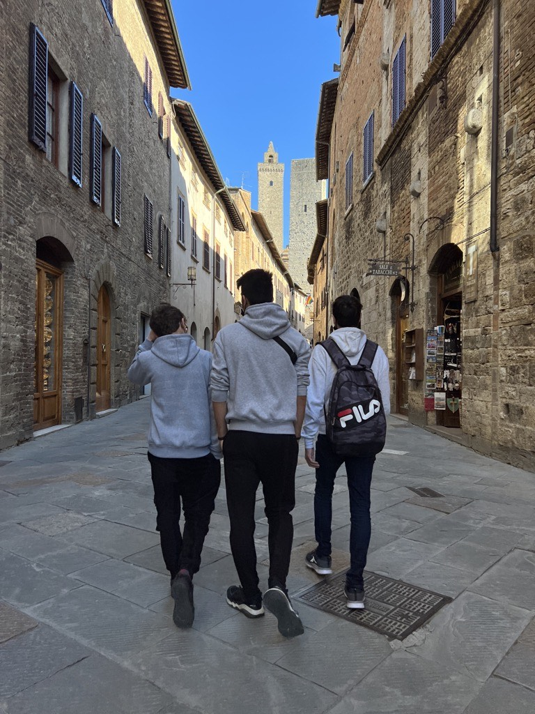
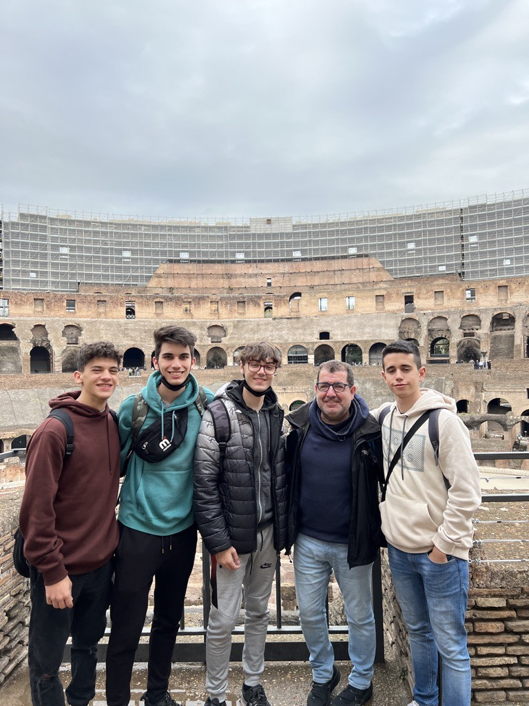
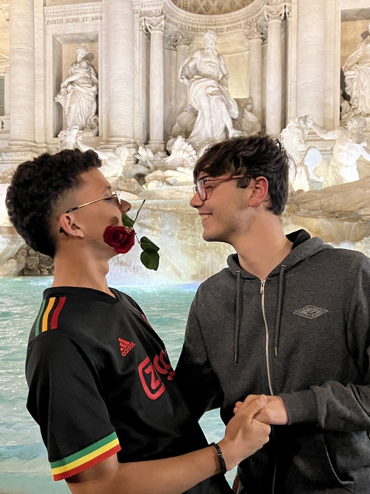
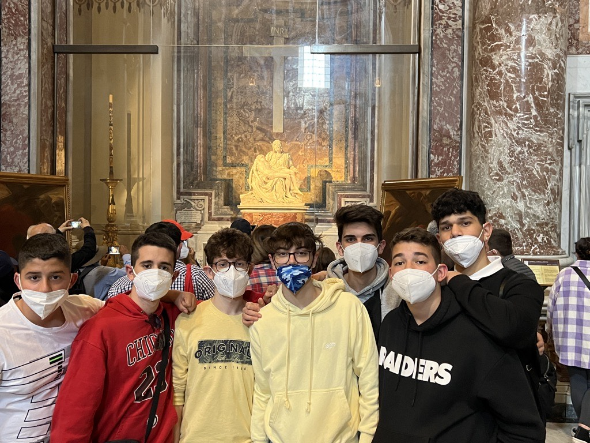

Viatge a Itàlia - 2022
Introducció
El primer viatge és Itàlia, va ser el meu primer viatge fora d'Espanya, va ser el viatge de final de curs de l'ESO, així que ho vaig fer amb tot el curs. Van ser tots els meus amics així que puc dir que ha estat un dels millors viatges que he fet, m'ho vaig passar genial cada dia.
Primer Dia: Arribada a Florència
El primer dia vam arribar a Florència, una ciutat que no creia que fos gaire interessant, però va ser una ciutat supr interessant, i sobretot, molt bonica. Tot i que cal dir que el millor van ser les nits a l'hotel.
Anècdota del dia
Una anecdota divertida es podria dir que va ser l'arribada, ja que el viatge el vam fer amb autocar, i com es pot imaginar, ningú no va dormir a la nit a l'autocar, així que en arribar tots estàvem super cansats i amb ganes de morir
Segon Dia: Explorant Pisa
El segon dia vam anar amb autocar a Pisa, òbviament a veure els monuments històrics, sent el princial la torre de Pisa, encara que hi havia moltes coses més i molt boniques.
Anècdota del dia
Una cosa força divertida d'aquest dia va ser veure els mercats fora del que és el recinte, són moltíssims llocs de venedors ambulants venent samarretes de futbol, una cosa que m'encastava i me'n compraria una fins que vaig veure que la qualitat era molt pitjor que aquí a Espanya, els escuts estaven impresos i no eren els originals!
Tercer Dia: Roma
El tercer dia vam ser a Roma, i ja que érem allà també vam anar al Vaticà. Des del més sincer que puc dir és simplement preciós, la ciutat de Roma, els seus monuments, i l'interior del Vaticà van ser el més bonic que he vist, els passadissos del Vaticà són simplement d'un altre món.
Conclusions del viatge
Per acabar aquest viatge, simplement dir que va ser un viatge inoblidable que recordo amb tot l'afecte del món, gràcies a ell tinc una de les meves fotos preferides, amb el meu millor amic, i uns dies plens d'aventures i llocs que no esperava que fossin tan impressionants, sens dubte tornaria a Itàlia ja que crec que no vam veure ni un 2% del que és.
